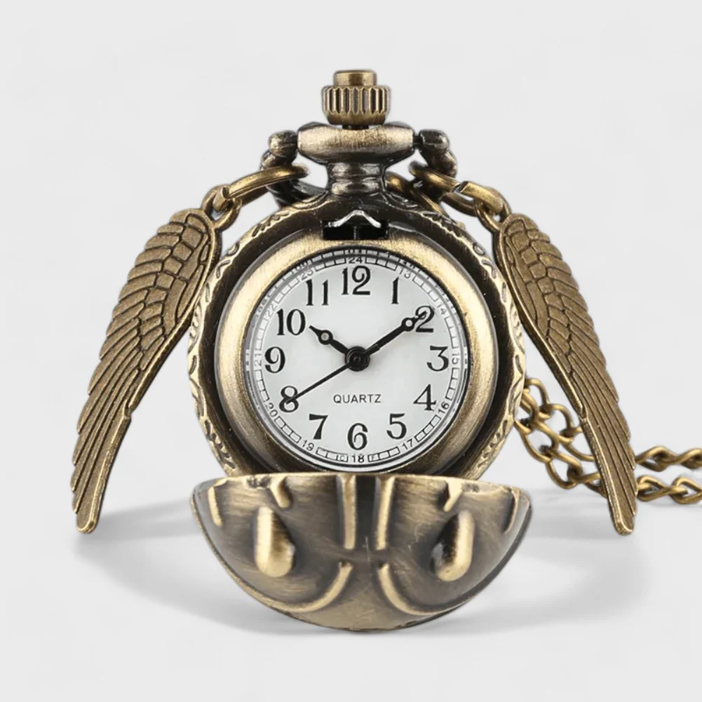

La Montre
Perrine Goget X Harry Potter
Je me suis amusée à créer l'animation de la montre avec l'application Hype 4.
Dans cet exercice, nous devions refaire une montre sur Illustrator.
La montre que j'ai choisi est une montre inspirée de l'univers de Harry Potter.
J'ai même pu tester ma tablette graphique pour la première fois de ma vie !

